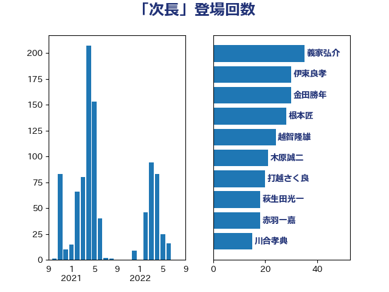

単語「次長」

| 義家弘介 | 自由民主党 | 35 回 |
| 伊東良孝 | 自由民主党 | 30 回 |
| 金田勝年 | 自由民主党 | 30 回 |
| 根本匠 | 自由民主党 | 28 回 |
| 越智隆雄 | 自由民主党 | 24 回 |
| 木原誠二 | 自由民主党 | 21 回 |
| 打越さく良 | 立憲民主党 | 20 回 |
| 萩生田光一 | 自由民主党 | 18 回 |
| 赤羽一嘉 | 公明党 | 18 回 |
| 川合孝典 | 国民民主党 | 15 回 |
| 末松信介 | 自由民主党 | 15 回 |
| 石原宏高 | 自由民主党 | 15 回 |
| 薗浦健太郎 | 自由民主党 | 15 回 |
| 古屋範子 | 公明党 | 14 回 |
| 中根一幸 | 自由民主党 | 13 回 |
| 石田真敏 | 自由民主党 | 12 回 |
| 足立康史 | 日本維新の会 | 12 回 |
| 浮島智子 | 公明党 | 11 回 |
| 上川陽子 | 自由民主党 | 9 回 |
| 永岡桂子 | 自由民主党 | 9 回 |
| 金子恭之 | 自由民主党 | 9 回 |
| 上月良祐 | 自由民主党 | 8 回 |
| 城内実 | 自由民主党 | 8 回 |
| 寺田学 | 立憲民主党 | 8 回 |
| 鈴木馨祐 | 自由民主党 | 8 回 |
| 阿部知子 | 立憲民主党 | 8 回 |
| あかま二郎 | 自由民主党 | 7 回 |
| 中谷一馬 | 立憲民主党 | 7 回 |
| 斎藤嘉隆 | 立憲民主党 | 7 回 |
| 高鳥修一 | 自由民主党 | 7 回 |
| 原口一博 | 立憲民主党 | 6 回 |
| 小泉進次郎 | 自由民主党 | 6 回 |
| 近藤昭一 | 立憲民主党 | 6 回 |
| あべ俊子 | 自由民主党 | 5 回 |
| 伊藤孝恵 | 国民民主党 | 5 回 |
| 古川禎久 | 自由民主党 | 5 回 |
| 橋本岳 | 自由民主党 | 5 回 |
| 石橋通宏 | 立憲民主党 | 5 回 |
| 吉良よし子 | 日本共産党 | 4 回 |
| 松島みどり | 自由民主党 | 4 回 |
| 林芳正 | 自由民主党 | 4 回 |
| 柳ヶ瀬裕文 | 日本維新の会 | 4 回 |
| 石井浩郎 | 自由民主党 | 4 回 |
| 長浜博行 | 無所属 | 4 回 |
| 関芳弘 | 自由民主党 | 4 回 |
| 上野賢一郎 | 自由民主党 | 3 回 |
| 太田房江 | 自由民主党 | 3 回 |
| 小西洋之 | 立憲民主党 | 3 回 |
| 平口洋 | 自由民主党 | 3 回 |
| 後藤祐一 | 立憲民主党 | 3 回 |
| 松沢成文 | 日本維新の会 | 3 回 |
| 秋野公造 | 公明党 | 3 回 |
| 井上英孝 | 日本維新の会 | 2 回 |
| 伊藤忠彦 | 自由民主党 | 2 回 |
| 伊藤渉 | 公明党 | 2 回 |
| 大塚拓 | 自由民主党 | 2 回 |
| 大塚耕平 | 国民民主党 | 2 回 |
| 小里泰弘 | 自由民主党 | 2 回 |
| 山口那津男 | 公明党 | 2 回 |
| 山添拓 | 日本共産党 | 2 回 |
| 島尻安伊子 | 自由民主党 | 2 回 |
| 手塚仁雄 | 立憲民主党 | 2 回 |
| 柚木道義 | 立憲民主党 | 2 回 |
| 梅村みずほ | 日本維新の会 | 2 回 |
| 森屋宏 | 自由民主党 | 2 回 |
| 渡辺博道 | 自由民主党 | 2 回 |
| 滝波宏文 | 自由民主党 | 2 回 |
| 熊野正士 | 公明党 | 2 回 |
| 自見はなこ | 自由民主党 | 2 回 |
| 西田昌司 | 自由民主党 | 2 回 |
| 豊田俊郎 | 自由民主党 | 2 回 |
| 鈴木俊一 | 自由民主党 | 2 回 |
| 鈴木宗男 | 日本維新の会 | 2 回 |
| 鎌田さゆり | 立憲民主党 | 2 回 |
| 階猛 | 立憲民主党 | 2 回 |
| 馬淵澄夫 | 立憲民主党 | 2 回 |
| 上野通子 | 自由民主党 | 1 回 |
| 中川正春 | 立憲民主党 | 1 回 |
| 中曽根康隆 | 自由民主党 | 1 回 |
| 中野洋昌 | 公明党 | 1 回 |
| 井上哲士 | 日本共産党 | 1 回 |
| 伊藤岳 | 日本共産党 | 1 回 |
| 佐々木さやか | 公明党 | 1 回 |
| 佐々木紀 | 自由民主党 | 1 回 |
| 佐藤信秋 | 自由民主党 | 1 回 |
| 古川俊治 | 自由民主党 | 1 回 |
| 吉川沙織 | 立憲民主党 | 1 回 |
| 吉田忠智 | 立憲民主党 | 1 回 |
| 吉田統彦 | 立憲民主党 | 1 回 |
| 大西健介 | 立憲民主党 | 1 回 |
| 宮崎雅夫 | 自由民主党 | 1 回 |
| 宮本岳志 | 日本共産党 | 1 回 |
| 小林鷹之 | 自由民主党 | 1 回 |
| 尾身朝子 | 自由民主党 | 1 回 |
| 山口晋 | 自由民主党 | 1 回 |
| 山本順三 | 自由民主党 | 1 回 |
| 山田勝彦 | 立憲民主党 | 1 回 |
| 岡田直樹 | 自由民主党 | 1 回 |
| 平山佐知子 | 無所属 | 1 回 |
| 平木大作 | 公明党 | 1 回 |
| 後藤田正純 | 自由民主党 | 1 回 |
| 新妻秀規 | 公明党 | 1 回 |
| 杉本和巳 | 日本維新の会 | 1 回 |
| 松野博一 | 自由民主党 | 1 回 |
| 森屋隆 | 立憲民主党 | 1 回 |
| 津島淳 | 自由民主党 | 1 回 |
| 浅田均 | 日本維新の会 | 1 回 |
| 浜田聡 | NHK党 | 1 回 |
| 海江田万里 | 立憲民主党 | 1 回 |
| 牧義夫 | 立憲民主党 | 1 回 |
| 玄葉光一郎 | 立憲民主党 | 1 回 |
| 田嶋要 | 立憲民主党 | 1 回 |
| 矢倉克夫 | 公明党 | 1 回 |
| 石川大我 | 立憲民主党 | 1 回 |
| 福田昭夫 | 立憲民主党 | 1 回 |
| 細田健一 | 自由民主党 | 1 回 |
| 芳賀道也 | 国民民主党 | 1 回 |
| 茂木敏充 | 自由民主党 | 1 回 |
| 菊田真紀子 | 立憲民主党 | 1 回 |
| 藤原崇 | 自由民主党 | 1 回 |
| 西村智奈美 | 立憲民主党 | 1 回 |
| 足立敏之 | 自由民主党 | 1 回 |
| 道下大樹 | 立憲民主党 | 1 回 |
| 里見隆治 | 公明党 | 1 回 |
| 野田佳彦 | 立憲民主党 | 1 回 |
| 青山周平 | 自由民主党 | 1 回 |
| 馬場成志 | 自由民主党 | 1 回 |
| 高村正大 | 自由民主党 | 1 回 |
| 麻生太郎 | 自由民主党 | 1 回 |